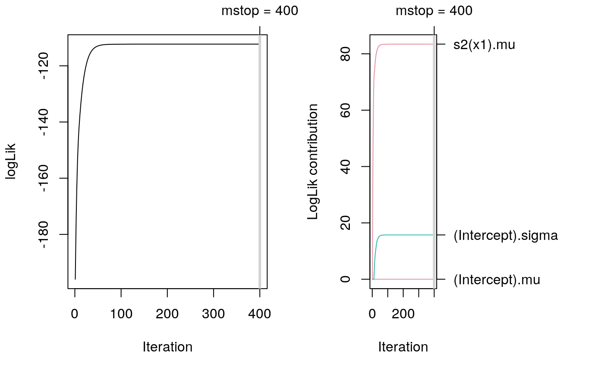

smooth.construct.ms.smooth.spec.RdThe function sets up a smooth term for shape constraint estimation of P-spline model terms. Note that this currently only works using boosting.
# S3 method for ms.smooth.spec smooth.construct(object, data, knots, ...)
| object | Either a smooth specification object, or object of class |
|---|---|
| data | A data frame or list, see also see function |
| knots | See function |
| … | Arguments passed to the smooth term constructor functions. |
See function see smooth.construct.
## Generate some data. d <- GAMart() ## Increasing: constr = 1. ## Decreasing: constr = 2. b <- bamlss(num ~ s2(x1,bs="ms",xt=list(constr=2)), data = d, sampler = FALSE, optimizer = boost)#> #> logLik -195.960 eps 0.1893 iteration 2 qsel 1 #> logLik -183.412 eps 3.1020 iteration 3 qsel 1 #> logLik -173.245 eps 0.6530 iteration 4 qsel 1 #> logLik -165.008 eps 0.4372 iteration 5 qsel 1 #> logLik -158.334 eps 0.2221 iteration 6 qsel 1 #> logLik -152.926 eps 0.1218 iteration 7 qsel 1 #> logLik -148.544 eps 0.3708 iteration 8 qsel 1 #> logLik -144.994 eps 0.1607 iteration 9 qsel 1 #> logLik -142.116 eps 0.0632 iteration 10 qsel 1 #> logLik -139.784 eps 0.0445 iteration 11 qsel 1 #> logLik -137.431 eps 0.0084 iteration 12 qsel 1 #> logLik -135.475 eps 0.0453 iteration 13 qsel 1 #> logLik -133.412 eps 0.0077 iteration 14 qsel 1 #> logLik -131.717 eps 0.0068 iteration 15 qsel 1 #> logLik -130.034 eps 0.0330 iteration 16 qsel 1 #> logLik -128.552 eps 0.0062 iteration 17 qsel 1 #> logLik -127.151 eps 0.0365 iteration 18 qsel 1 #> logLik -125.866 eps 0.0057 iteration 19 qsel 1 #> logLik -124.702 eps 0.0254 iteration 20 qsel 1 #> logLik -123.597 eps 0.0052 iteration 21 qsel 1 #> logLik -122.631 eps 0.0355 iteration 22 qsel 1 #> logLik -121.686 eps 0.0048 iteration 23 qsel 1 #> logLik -120.887 eps 0.0219 iteration 24 qsel 1 #> logLik -120.083 eps 0.0043 iteration 25 qsel 1 #> logLik -119.422 eps 0.1863 iteration 26 qsel 1 #> logLik -118.742 eps 0.0039 iteration 27 qsel 1 #> logLik -118.187 eps 0.0035 iteration 28 qsel 1 #> logLik -117.633 eps 0.0216 iteration 29 qsel 1 #> logLik -117.164 eps 0.0032 iteration 30 qsel 1 #> logLik -116.707 eps 0.0171 iteration 31 qsel 1 #> logLik -116.313 eps 0.0029 iteration 32 qsel 1 #> logLik -115.938 eps 0.0162 iteration 33 qsel 1 #> logLik -115.608 eps 0.0026 iteration 34 qsel 1 #> logLik -115.299 eps 0.0284 iteration 35 qsel 1 #> logLik -115.023 eps 0.0024 iteration 36 qsel 1 #> logLik -114.770 eps 0.0136 iteration 37 qsel 1 #> logLik -114.541 eps 0.0021 iteration 38 qsel 1 #> logLik -114.333 eps 0.0122 iteration 39 qsel 1 #> logLik -114.142 eps 0.0019 iteration 40 qsel 1 #> logLik -113.972 eps 0.0157 iteration 41 qsel 1 #> logLik -113.814 eps 0.0017 iteration 42 qsel 1 #> logLik -113.674 eps 0.0242 iteration 43 qsel 1 #> logLik -113.544 eps 0.0016 iteration 44 qsel 1 #> logLik -113.429 eps 0.0082 iteration 45 qsel 1 #> logLik -113.322 eps 0.0014 iteration 46 qsel 1 #> logLik -113.228 eps 0.0068 iteration 47 qsel 1 #> logLik -113.139 eps 0.0013 iteration 48 qsel 1 #> logLik -113.062 eps 0.0063 iteration 49 qsel 1 #> logLik -112.989 eps 0.0011 iteration 50 qsel 1 #> logLik -112.926 eps 0.0077 iteration 51 qsel 1 #> logLik -112.866 eps 0.0010 iteration 52 qsel 1 #> logLik -112.814 eps 0.0061 iteration 53 qsel 1 #> logLik -112.765 eps 0.0009 iteration 54 qsel 1 #> logLik -112.722 eps 0.0047 iteration 55 qsel 1 #> logLik -112.682 eps 0.0008 iteration 56 qsel 1 #> logLik -112.647 eps 0.0042 iteration 57 qsel 1 #> logLik -112.614 eps 0.0007 iteration 58 qsel 1 #> logLik -112.585 eps 0.0040 iteration 59 qsel 1 #> logLik -112.558 eps 0.0007 iteration 60 qsel 1 #> logLik -112.534 eps 0.0041 iteration 61 qsel 1 #> logLik -112.512 eps 0.0006 iteration 62 qsel 1 #> logLik -112.493 eps 0.0057 iteration 63 qsel 1 #> logLik -112.475 eps 0.0005 iteration 64 qsel 1 #> logLik -112.459 eps 0.0055 iteration 65 qsel 1 #> logLik -112.444 eps 0.0005 iteration 66 qsel 1 #> logLik -112.431 eps 0.0093 iteration 67 qsel 1 #> logLik -112.420 eps 0.0004 iteration 68 qsel 1 #> logLik -112.409 eps 0.0032 iteration 69 qsel 1 #> logLik -112.399 eps 0.0004 iteration 70 qsel 1 #> logLik -112.391 eps 0.0025 iteration 71 qsel 1 #> logLik -112.383 eps 0.0003 iteration 72 qsel 1 #> logLik -112.376 eps 0.0022 iteration 73 qsel 1 #> logLik -112.369 eps 0.0003 iteration 74 qsel 1 #> logLik -112.363 eps 0.0020 iteration 75 qsel 1 #> logLik -112.358 eps 0.0003 iteration 76 qsel 1 #> logLik -112.353 eps 0.0018 iteration 77 qsel 1 #> logLik -112.349 eps 0.0002 iteration 78 qsel 1 #> logLik -112.345 eps 0.0018 iteration 79 qsel 1 #> logLik -112.342 eps 0.0002 iteration 80 qsel 1 #> logLik -112.339 eps 0.0020 iteration 81 qsel 1 #> logLik -112.336 eps 0.0002 iteration 82 qsel 1 #> logLik -112.333 eps 0.0047 iteration 83 qsel 1 #> logLik -112.331 eps 0.0002 iteration 84 qsel 1 #> logLik -112.329 eps 0.0024 iteration 85 qsel 1 #> logLik -112.327 eps 0.0001 iteration 86 qsel 1 #> logLik -112.325 eps 0.0015 iteration 87 qsel 1 #> logLik -112.324 eps 0.0012 iteration 88 qsel 1 #> logLik -112.322 eps 0.0001 iteration 89 qsel 1 #> logLik -112.321 eps 0.0010 iteration 90 qsel 1 #> logLik -112.320 eps 0.0001 iteration 91 qsel 1 #> logLik -112.319 eps 0.0009 iteration 92 qsel 1 #> logLik -112.318 eps 0.0001 iteration 93 qsel 1 #> logLik -112.317 eps 0.0008 iteration 94 qsel 1 #> logLik -112.316 eps 0.0008 iteration 95 qsel 1 #> logLik -112.315 eps 0.0001 iteration 96 qsel 1 #> logLik -112.314 eps 0.0007 iteration 97 qsel 1 #> logLik -112.314 eps 0.0001 iteration 98 qsel 1 #> logLik -112.313 eps 0.0007 iteration 99 qsel 1 #> logLik -112.313 eps 0.0000 iteration 100 qsel 1 #> logLik -112.312 eps 0.0006 iteration 101 qsel 1 #> logLik -112.312 eps 0.0005 iteration 102 qsel 1 #> logLik -112.311 eps 0.0000 iteration 103 qsel 1 #> logLik -112.311 eps 0.0005 iteration 104 qsel 1 #> logLik -112.311 eps 0.0005 iteration 105 qsel 1 #> logLik -112.310 eps 0.0005 iteration 106 qsel 1 #> logLik -112.310 eps 0.0005 iteration 107 qsel 1 #> logLik -112.309 eps 0.0005 iteration 108 qsel 1 #> logLik -112.308 eps 0.0007 iteration 109 qsel 1 #> logLik -112.304 eps 0.0006 iteration 110 qsel 1 #> logLik -112.300 eps 0.0006 iteration 111 qsel 1 #> logLik -112.297 eps 0.0006 iteration 112 qsel 1 #> logLik -112.294 eps 0.0005 iteration 113 qsel 1 #> logLik -112.292 eps 0.0004 iteration 114 qsel 1 #> logLik -112.290 eps 0.0004 iteration 115 qsel 1 #> logLik -112.289 eps 0.0004 iteration 116 qsel 1 #> logLik -112.288 eps 0.0003 iteration 117 qsel 1 #> logLik -112.287 eps 0.0003 iteration 118 qsel 1 #> logLik -112.286 eps 0.0002 iteration 119 qsel 1 #> logLik -112.286 eps 0.0002 iteration 120 qsel 1 #> logLik -112.285 eps 0.0002 iteration 121 qsel 1 #> logLik -112.285 eps 0.0002 iteration 122 qsel 1 #> logLik -112.284 eps 0.0000 iteration 123 qsel 1 #> logLik -112.284 eps 0.0001 iteration 124 qsel 1 #> logLik -112.284 eps 0.0000 iteration 125 qsel 1 #> logLik -112.283 eps 0.0001 iteration 126 qsel 1 #> logLik -112.283 eps 0.0000 iteration 127 qsel 1 #> logLik -112.283 eps 0.0001 iteration 128 qsel 1 #> logLik -112.283 eps 0.0000 iteration 129 qsel 1 #> logLik -112.283 eps 0.0001 iteration 130 qsel 1 #> logLik -112.282 eps 0.0000 iteration 131 qsel 1 #> logLik -112.282 eps 0.0001 iteration 132 qsel 1 #> logLik -112.282 eps 0.0000 iteration 133 qsel 1 #> logLik -112.282 eps 0.0001 iteration 134 qsel 1 #> logLik -112.282 eps 0.0000 iteration 135 qsel 1 #> logLik -112.282 eps 0.0001 iteration 136 qsel 1 #> logLik -112.282 eps 0.0000 iteration 137 qsel 1 #> logLik -112.282 eps 0.0000 iteration 138 qsel 1 #> logLik -112.282 eps 0.0000 iteration 139 qsel 1 #> logLik -112.282 eps 0.0000 iteration 140 qsel 1 #> logLik -112.282 eps 0.0000 iteration 141 qsel 1 #> logLik -112.282 eps 0.0000 iteration 142 qsel 1 #> logLik -112.282 eps 0.0000 iteration 143 qsel 1 #> logLik -112.281 eps 0.0000 iteration 144 qsel 1 #> logLik -112.281 eps 0.0000 iteration 145 qsel 1 #> logLik -112.281 eps 0.0000 iteration 146 qsel 1 #> logLik -112.281 eps 0.0000 iteration 147 qsel 1 #> logLik -112.281 eps 0.0000 iteration 148 qsel 1 #> logLik -112.281 eps 0.0000 iteration 149 qsel 1 #> logLik -112.281 eps 0.0000 iteration 150 qsel 1 #> logLik -112.281 eps 0.0000 iteration 151 qsel 1 #> logLik -112.281 eps 0.0000 iteration 152 qsel 1 #> logLik -112.281 eps 0.0000 iteration 153 qsel 1 #> logLik -112.281 eps 0.0000 iteration 154 qsel 1 #> logLik -112.281 eps 0.0000 iteration 155 qsel 1 #> logLik -112.281 eps 0.0000 iteration 156 qsel 1 #> logLik -112.281 eps 0.0000 iteration 157 qsel 1 #> logLik -112.281 eps 0.0000 iteration 158 qsel 1 #> logLik -112.281 eps 0.0000 iteration 159 qsel 1 #> logLik -112.281 eps 0.0000 iteration 160 qsel 1 #> logLik -112.281 eps 0.0000 iteration 161 qsel 1 #> logLik -112.281 eps 0.0000 iteration 162 qsel 1 #> logLik -112.281 eps 0.0000 iteration 163 qsel 1 #> logLik -112.281 eps 0.0000 iteration 164 qsel 1 #> logLik -112.281 eps 0.0000 iteration 165 qsel 1 #> logLik -112.281 eps 0.0000 iteration 166 qsel 1 #> logLik -112.281 eps 0.0000 iteration 167 qsel 1 #> logLik -112.281 eps 0.0000 iteration 168 qsel 1 #> logLik -112.281 eps 0.0000 iteration 169 qsel 1 #> logLik -112.281 eps 0.0000 iteration 170 qsel 1 #> logLik -112.281 eps 0.0000 iteration 171 qsel 1 #> logLik -112.281 eps 0.0000 iteration 172 qsel 1 #> logLik -112.281 eps 0.0000 iteration 173 qsel 1 #> logLik -112.281 eps 0.0000 iteration 174 qsel 1 #> logLik -112.281 eps 0.0000 iteration 175 qsel 1 #> logLik -112.281 eps 0.0000 iteration 176 qsel 1 #> logLik -112.281 eps 0.0000 iteration 177 qsel 1 #> logLik -112.281 eps 0.0000 iteration 178 qsel 1 #> logLik -112.281 eps 0.0000 iteration 179 qsel 1 #> logLik -112.281 eps 0.0000 iteration 180 qsel 1 #> logLik -112.281 eps 0.0000 iteration 181 qsel 1 #> logLik -112.281 eps 0.0000 iteration 182 qsel 1 #> logLik -112.281 eps 0.0000 iteration 183 qsel 1 #> logLik -112.281 eps 0.0000 iteration 184 qsel 1 #> logLik -112.281 eps 0.0000 iteration 185 qsel 1 #> logLik -112.281 eps 0.0000 iteration 186 qsel 1 #> logLik -112.281 eps 0.0000 iteration 187 qsel 1 #> logLik -112.281 eps 0.0000 iteration 188 qsel 1 #> logLik -112.281 eps 0.0000 iteration 189 qsel 1 #> logLik -112.281 eps 0.0000 iteration 190 qsel 1 #> logLik -112.281 eps 0.0000 iteration 191 qsel 1 #> logLik -112.281 eps 0.0000 iteration 192 qsel 1 #> logLik -112.281 eps 0.0000 iteration 193 qsel 1 #> logLik -112.281 eps 0.0000 iteration 194 qsel 1 #> logLik -112.281 eps 0.0000 iteration 195 qsel 1 #> logLik -112.281 eps 0.0000 iteration 196 qsel 1 #> logLik -112.281 eps 0.0000 iteration 197 qsel 1 #> logLik -112.281 eps 0.0000 iteration 198 qsel 1 #> logLik -112.281 eps 0.0000 iteration 199 qsel 1 #> logLik -112.281 eps 0.0000 iteration 200 qsel 1 #> logLik -112.281 eps 0.0000 iteration 201 qsel 1 #> logLik -112.281 eps 0.0000 iteration 202 qsel 1 #> logLik -112.281 eps 0.0000 iteration 203 qsel 1 #> logLik -112.281 eps 0.0000 iteration 204 qsel 1 #> logLik -112.281 eps 0.0000 iteration 205 qsel 1 #> logLik -112.281 eps 0.0000 iteration 206 qsel 1 #> logLik -112.281 eps 0.0000 iteration 207 qsel 1 #> logLik -112.281 eps 0.0000 iteration 208 qsel 1 #> logLik -112.281 eps 0.0000 iteration 209 qsel 1 #> logLik -112.281 eps 0.0000 iteration 210 qsel 1 #> logLik -112.281 eps 0.0000 iteration 211 qsel 1 #> logLik -112.281 eps 0.0000 iteration 212 qsel 1 #> logLik -112.281 eps 0.0000 iteration 213 qsel 1 #> logLik -112.281 eps 0.0000 iteration 214 qsel 1 #> logLik -112.281 eps 0.0000 iteration 215 qsel 1 #> logLik -112.281 eps 0.0000 iteration 216 qsel 1 #> logLik -112.281 eps 0.0000 iteration 217 qsel 1 #> logLik -112.281 eps 0.0000 iteration 218 qsel 1 #> logLik -112.281 eps 0.0000 iteration 219 qsel 1 #> logLik -112.281 eps 0.0000 iteration 220 qsel 1 #> logLik -112.281 eps 0.0000 iteration 221 qsel 1 #> logLik -112.281 eps 0.0000 iteration 222 qsel 1 #> logLik -112.281 eps 0.0000 iteration 223 qsel 1 #> logLik -112.281 eps 0.0000 iteration 224 qsel 1 #> logLik -112.281 eps 0.0000 iteration 225 qsel 1 #> logLik -112.281 eps 0.0000 iteration 226 qsel 1 #> logLik -112.281 eps 0.0000 iteration 227 qsel 1 #> logLik -112.281 eps 0.0000 iteration 228 qsel 1 #> logLik -112.281 eps 0.0000 iteration 229 qsel 1 #> logLik -112.281 eps 0.0000 iteration 230 qsel 1 #> logLik -112.281 eps 0.0000 iteration 231 qsel 1 #> logLik -112.281 eps 0.0000 iteration 232 qsel 1 #> logLik -112.281 eps 0.0000 iteration 233 qsel 1 #> logLik -112.281 eps 0.0000 iteration 234 qsel 1 #> logLik -112.281 eps 0.0000 iteration 235 qsel 1 #> logLik -112.281 eps 0.0000 iteration 236 qsel 1 #> logLik -112.281 eps 0.0000 iteration 237 qsel 1 #> logLik -112.281 eps 0.0000 iteration 238 qsel 1 #> logLik -112.281 eps 0.0000 iteration 239 qsel 1 #> logLik -112.281 eps 0.0000 iteration 240 qsel 1 #> logLik -112.281 eps 0.0000 iteration 241 qsel 1 #> logLik -112.281 eps 0.0000 iteration 242 qsel 1 #> logLik -112.281 eps 0.0000 iteration 243 qsel 1 #> logLik -112.281 eps 0.0000 iteration 244 qsel 1 #> logLik -112.281 eps 0.0000 iteration 245 qsel 1 #> logLik -112.281 eps 0.0000 iteration 246 qsel 1 #> logLik -112.281 eps 0.0000 iteration 247 qsel 1 #> logLik -112.281 eps 0.0000 iteration 248 qsel 1 #> logLik -112.281 eps 0.0000 iteration 249 qsel 1 #> logLik -112.281 eps 0.0000 iteration 250 qsel 1 #> logLik -112.281 eps 0.0000 iteration 251 qsel 1 #> logLik -112.281 eps 0.0000 iteration 252 qsel 1 #> logLik -112.281 eps 0.0000 iteration 253 qsel 1 #> logLik -112.281 eps 0.0000 iteration 254 qsel 1 #> logLik -112.281 eps 0.0000 iteration 255 qsel 1 #> logLik -112.281 eps 0.0000 iteration 256 qsel 1 #> logLik -112.281 eps 0.0000 iteration 257 qsel 1 #> logLik -112.281 eps 0.0000 iteration 258 qsel 1 #> logLik -112.281 eps 0.0000 iteration 259 qsel 1 #> logLik -112.281 eps 0.0000 iteration 260 qsel 1 #> logLik -112.281 eps 0.0000 iteration 261 qsel 1 #> logLik -112.281 eps 0.0000 iteration 262 qsel 1 #> logLik -112.281 eps 0.0000 iteration 263 qsel 1 #> logLik -112.281 eps 0.0000 iteration 264 qsel 1 #> logLik -112.281 eps 0.0000 iteration 265 qsel 1 #> logLik -112.281 eps 0.0000 iteration 266 qsel 1 #> logLik -112.281 eps 0.0000 iteration 267 qsel 1 #> logLik -112.281 eps 0.0000 iteration 268 qsel 1 #> logLik -112.281 eps 0.0000 iteration 269 qsel 1 #> logLik -112.281 eps 0.0000 iteration 270 qsel 1 #> logLik -112.281 eps 0.0000 iteration 271 qsel 1 #> logLik -112.281 eps 0.0000 iteration 272 qsel 1 #> logLik -112.281 eps 0.0000 iteration 273 qsel 1 #> logLik -112.281 eps 0.0000 iteration 274 qsel 1 #> logLik -112.281 eps 0.0000 iteration 275 qsel 1 #> logLik -112.281 eps 0.0000 iteration 276 qsel 1 #> logLik -112.281 eps 0.0000 iteration 277 qsel 1 #> logLik -112.281 eps 0.0000 iteration 278 qsel 1 #> logLik -112.281 eps 0.0000 iteration 279 qsel 1 #> logLik -112.281 eps 0.0000 iteration 280 qsel 1 #> logLik -112.281 eps 0.0000 iteration 281 qsel 1 #> logLik -112.281 eps 0.0000 iteration 282 qsel 1 #> logLik -112.281 eps 0.0000 iteration 283 qsel 1 #> logLik -112.281 eps 0.0000 iteration 284 qsel 1 #> logLik -112.281 eps 0.0000 iteration 285 qsel 1 #> logLik -112.281 eps 0.0000 iteration 286 qsel 1 #> logLik -112.281 eps 0.0000 iteration 287 qsel 1 #> logLik -112.281 eps 0.0000 iteration 288 qsel 1 #> logLik -112.281 eps 0.0000 iteration 289 qsel 1 #> logLik -112.281 eps 0.0000 iteration 290 qsel 1 #> logLik -112.281 eps 0.0000 iteration 291 qsel 1 #> logLik -112.281 eps 0.0000 iteration 292 qsel 1 #> logLik -112.281 eps 0.0000 iteration 293 qsel 1 #> logLik -112.281 eps 0.0000 iteration 294 qsel 1 #> logLik -112.281 eps 0.0000 iteration 295 qsel 1 #> logLik -112.281 eps 0.0000 iteration 296 qsel 1 #> logLik -112.281 eps 0.0000 iteration 297 qsel 1 #> logLik -112.281 eps 0.0000 iteration 298 qsel 1 #> logLik -112.281 eps 0.0000 iteration 299 qsel 1 #> logLik -112.281 eps 0.0000 iteration 300 qsel 1 #> logLik -112.281 eps 0.0000 iteration 301 qsel 1 #> logLik -112.281 eps 0.0000 iteration 302 qsel 1 #> logLik -112.281 eps 0.0000 iteration 303 qsel 1 #> logLik -112.281 eps 0.0000 iteration 304 qsel 1 #> logLik -112.281 eps 0.0000 iteration 305 qsel 1 #> logLik -112.281 eps 0.0000 iteration 306 qsel 1 #> logLik -112.281 eps 0.0000 iteration 307 qsel 1 #> logLik -112.281 eps 0.0000 iteration 308 qsel 1 #> logLik -112.281 eps 0.0000 iteration 309 qsel 1 #> logLik -112.281 eps 0.0000 iteration 310 qsel 1 #> logLik -112.281 eps 0.0000 iteration 311 qsel 1 #> logLik -112.281 eps 0.0000 iteration 312 qsel 1 #> logLik -112.281 eps 0.0000 iteration 313 qsel 1 #> logLik -112.281 eps 0.0000 iteration 314 qsel 1 #> logLik -112.281 eps 0.0000 iteration 315 qsel 1 #> logLik -112.281 eps 0.0000 iteration 316 qsel 1 #> logLik -112.281 eps 0.0000 iteration 317 qsel 1 #> logLik -112.281 eps 0.0000 iteration 318 qsel 1 #> logLik -112.281 eps 0.0000 iteration 319 qsel 1 #> logLik -112.281 eps 0.0000 iteration 320 qsel 1 #> logLik -112.281 eps 0.0000 iteration 321 qsel 1 #> logLik -112.281 eps 0.0000 iteration 322 qsel 1 #> logLik -112.281 eps 0.0000 iteration 323 qsel 1 #> logLik -112.281 eps 0.0000 iteration 324 qsel 1 #> logLik -112.281 eps 0.0000 iteration 325 qsel 1 #> logLik -112.281 eps 0.0000 iteration 326 qsel 1 #> logLik -112.281 eps 0.0000 iteration 327 qsel 1 #> logLik -112.281 eps 0.0000 iteration 328 qsel 1 #> logLik -112.281 eps 0.0000 iteration 329 qsel 1 #> logLik -112.281 eps 0.0000 iteration 330 qsel 1 #> logLik -112.281 eps 0.0000 iteration 331 qsel 1 #> logLik -112.281 eps 0.0000 iteration 332 qsel 1 #> logLik -112.281 eps 0.0000 iteration 333 qsel 1 #> logLik -112.281 eps 0.0000 iteration 334 qsel 1 #> logLik -112.281 eps 0.0000 iteration 335 qsel 1 #> logLik -112.281 eps 0.0000 iteration 336 qsel 1 #> logLik -112.281 eps 0.0000 iteration 337 qsel 1 #> logLik -112.281 eps 0.0000 iteration 338 qsel 1 #> logLik -112.281 eps 0.0000 iteration 339 qsel 1 #> logLik -112.281 eps 0.0000 iteration 340 qsel 1 #> logLik -112.281 eps 0.0000 iteration 341 qsel 1 #> logLik -112.281 eps 0.0000 iteration 342 qsel 1 #> logLik -112.281 eps 0.0000 iteration 343 qsel 1 #> logLik -112.281 eps 0.0000 iteration 344 qsel 1 #> logLik -112.281 eps 0.0000 iteration 345 qsel 1 #> logLik -112.281 eps 0.0000 iteration 346 qsel 1 #> logLik -112.281 eps 0.0000 iteration 347 qsel 1 #> logLik -112.281 eps 0.0000 iteration 348 qsel 1 #> logLik -112.281 eps 0.0000 iteration 349 qsel 1 #> logLik -112.281 eps 0.0000 iteration 350 qsel 1 #> logLik -112.281 eps 0.0000 iteration 351 qsel 1 #> logLik -112.281 eps 0.0000 iteration 352 qsel 1 #> logLik -112.281 eps 0.0000 iteration 353 qsel 1 #> logLik -112.281 eps 0.0000 iteration 354 qsel 1 #> logLik -112.281 eps 0.0000 iteration 355 qsel 1 #> logLik -112.281 eps 0.0000 iteration 356 qsel 1 #> logLik -112.281 eps 0.0000 iteration 357 qsel 1 #> logLik -112.281 eps 0.0000 iteration 358 qsel 1 #> logLik -112.281 eps 0.0000 iteration 359 qsel 1 #> logLik -112.281 eps 0.0000 iteration 360 qsel 1 #> logLik -112.281 eps 0.0000 iteration 361 qsel 1 #> logLik -112.281 eps 0.0000 iteration 362 qsel 1 #> logLik -112.281 eps 0.0000 iteration 363 qsel 1 #> logLik -112.281 eps 0.0000 iteration 364 qsel 1 #> logLik -112.281 eps 0.0000 iteration 365 qsel 1 #> logLik -112.281 eps 0.0000 iteration 366 qsel 1 #> logLik -112.281 eps 0.0000 iteration 367 qsel 1 #> logLik -112.281 eps 0.0000 iteration 368 qsel 1 #> logLik -112.281 eps 0.0000 iteration 369 qsel 1 #> logLik -112.281 eps 0.0000 iteration 370 qsel 1 #> logLik -112.281 eps 0.0000 iteration 371 qsel 1 #> logLik -112.281 eps 0.0000 iteration 372 qsel 1 #> logLik -112.281 eps 0.0000 iteration 373 qsel 1 #> logLik -112.281 eps 0.0000 iteration 374 qsel 1 #> logLik -112.281 eps 0.0000 iteration 375 qsel 1 #> logLik -112.281 eps 0.0000 iteration 376 qsel 1 #> logLik -112.281 eps 0.0000 iteration 377 qsel 1 #> logLik -112.281 eps 0.0000 iteration 378 qsel 1 #> logLik -112.281 eps 0.0000 iteration 379 qsel 1 #> logLik -112.281 eps 0.0000 iteration 380 qsel 1 #> logLik -112.281 eps 0.0000 iteration 381 qsel 1 #> logLik -112.281 eps 0.0000 iteration 382 qsel 1 #> logLik -112.281 eps 0.0000 iteration 383 qsel 1 #> logLik -112.281 eps 0.0000 iteration 384 qsel 1 #> logLik -112.281 eps 0.0000 iteration 385 qsel 1 #> logLik -112.281 eps 0.0000 iteration 386 qsel 1 #> logLik -112.281 eps 0.0000 iteration 387 qsel 1 #> logLik -112.281 eps 0.0000 iteration 388 qsel 1 #> logLik -112.281 eps 0.0000 iteration 389 qsel 1 #> logLik -112.281 eps 0.0000 iteration 390 qsel 1 #> logLik -112.281 eps 0.0000 iteration 391 qsel 1 #> logLik -112.281 eps 0.0000 iteration 392 qsel 1 #> logLik -112.281 eps 0.0000 iteration 393 qsel 1 #> logLik -112.281 eps 0.0000 iteration 394 qsel 1 #> logLik -112.281 eps 0.0000 iteration 395 qsel 1 #> logLik -112.281 eps 0.0000 iteration 396 qsel 1 #> logLik -112.281 eps 0.0000 iteration 397 qsel 1 #> logLik -112.281 eps 0.0000 iteration 398 qsel 1 #> logLik -112.281 eps 0.0000 iteration 399 qsel 1 #> logLik -112.281 eps 0.0000 iteration 400 qsel 1 #> #> elapsed time: 2.63secplot(b)